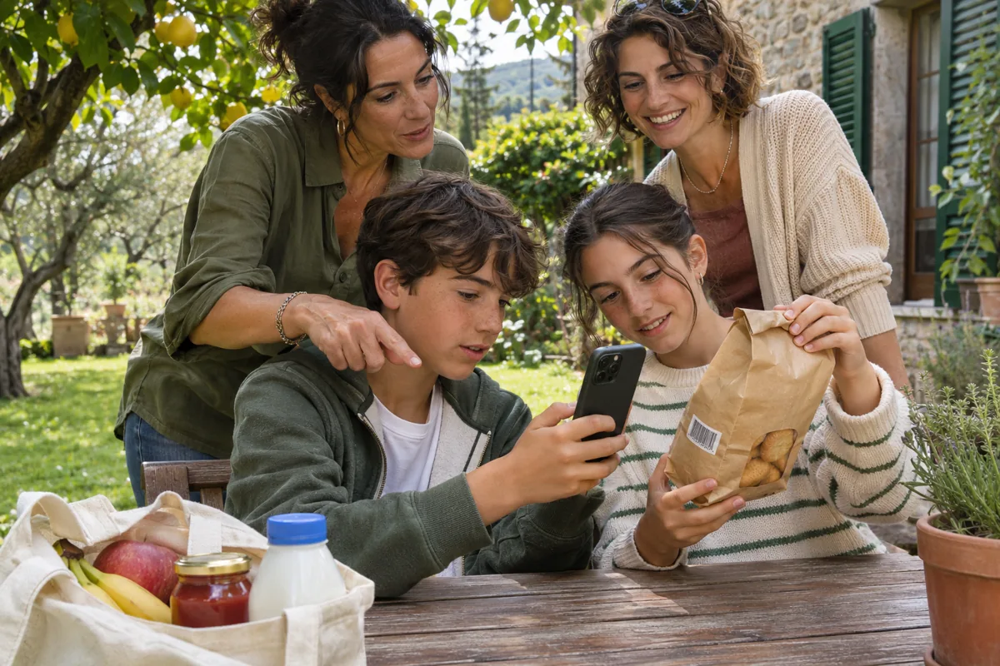

Die Vorrats-Challenge · Ab etwa 10 Jahren
„Mama kümmert sich schon darum!“
Diesen Satz hört man zu Hause, wenn es ums Einkaufen geht. Heute kümmert sich Mama darum. In ein paar Jahren werden die Kinder selbst einkaufen und Mahlzeiten planen, für sich oder für ihre eigene Familie.
Wer zum ersten Mal allein oder zu zweit wohnt, muss plötzlich jeden Tag entscheiden, was eingekauft und gekocht wird. Schnell greift man zu Fertiggerichten, gibt mehr aus als geplant oder kauft Dinge doppelt. Und hinten im Kühlschrank läuft inzwischen ein Lebensmittel ab.
Deshalb möchten wir Eltern dabei helfen, ihre Kinder früh einzubeziehen. Wir nennen es ein kleines Spiel, weil man gemeinsam mit drei Lebensmitteln anfangen kann, die schon zu Hause sind. Nachsehen, was da ist, eine Mahlzeit planen und aufschreiben, was fehlt, sind einfache Gewohnheiten. Wenn die Kinder später ihren eigenen Haushalt führen, wissen sie, wo sie anfangen können.

Vom Spiel zum echten Einkauf
- Übt gemeinsam. Öffnet das Spiel, fügt ein Lebensmittel hinzu und tragt ein, was ihr davon verbraucht. Sucht danach zu Hause drei echte Lebensmittel aus und notiert Lagerort, Restmenge und gegebenenfalls das Datum auf der Verpackung.
- Schreibt einen Einkaufszettel. Sucht ein Gericht aus, das ihr zusammen zubereiten möchtet. Wer die Vorräte betreut, prüft die Zutaten, schreibt Fehlendes auf und schlägt vor, was ihr bald aufbrauchen könnt. Hakt beim Einkauf ab, was im Wagen landet.
- Erfasst Einkäufe und Verbrauch. Tragt die Einkäufe zu Hause ein. Ist ein Glas leer, entfernt es aus dem Bestand. Verbraucht ihr nur die halbe Packung, ändert die Restmenge.
- Macht daraus eine Aufgabe zu Hause. Helft den Kindern bei den ersten Versuchen. Vor dem nächsten Einkauf können sie selbst die Vorräte prüfen und eine Liste vorschlagen. Geht sie gemeinsam durch, bevor ihr losgeht.
Ladet ein paar Freunde zur Vorrats-Challenge ein
Ladet ein paar Freunde eurer Kinder ein und legt einige Lebensmittelpackungen auf den Tisch. Mit einem Erwachsenen dabei können sie in der richtigen App einen kleinen Übungsvorrat anlegen. Reihum lesen sie das Etikett, wählen einen Lagerort und tragen das Produkt in die App ein.
Fragt, in welcher Abteilung sie das Produkt suchen würden, etwa bei den Milchprodukten oder bei Obst und Gemüse, und wo es zu Hause hingehört. Joghurt kommt in den Kühlschrank, Nudeln können in den Vorratsschrank. Schaut gemeinsam auf die Verpackungen. „Zu verbrauchen bis“ kennzeichnet das Verbrauchsdatum. „Mindestens haltbar bis“ bezieht sich auf die Qualität bei der angegebenen Lagerung.
Stellt euch zum Schluss vor, ihr bereitet einen Snack vor. Lasst die Kinder eintragen, was sie verbraucht haben, und den nächsten Einkaufszettel schreiben. Bevor etwas auf die Liste kommt, schaut gemeinsam nach, ob es schon da ist.
Neben dem Spiel gibt es auf der Website Anleitungen für alle Funktionen. In der App erklärt eine Hilfe an jedem Eingabefeld, was dort eingetragen wird.
Warum wir das kleine Spiel entwickelt haben
Ursprünglich sollte EatMeFirst Familien beim Umgang mit ihren Einkäufen helfen, vom Einräumen über den Verbrauch bis zum nächsten Einkaufszettel. Dann merkten wir, dass es sich lohnt, Kindern genau diese Fähigkeiten beizubringen. So entstand das kleine Spiel zum Üben, bevor sie sich um die echten Vorräte kümmern.
Gebt den Kindern nach dem nächsten Einkauf ein paar Lebensmittel. Lasst sie die Produkte selbst in die App eintragen, einen Lagerort wählen und das Datum ablesen und notieren. Verbraucht ihr etwas davon, können sie die Restmenge aktualisieren. Beim nächsten Einkauf können sie prüfen, was fehlt, und die Liste schreiben. Macht es anfangs gemeinsam und überlasst ihnen nach und nach mehr.
Wir wollten, dass Familien kostenlos üben und ihre Vorräte verwalten können. Das Spiel, die Bestandsliste, die Verbrauchserfassung, der Einkaufszettel und das automatische Speichern auf dem Handy sind kostenlos. Alles läuft im Browser, ohne Installation oder Anmeldung. Die eingegebenen Einkaufs- und Verbrauchsdaten bleiben im Browser des Geräts. EatMeFirst sendet sie weder an eigene Server noch gibt es sie an Dritte weiter.
Wenn es euch hilft, erzählt es weiter
Empfehlt EatMeFirst eurer Familie und euren Freunden, lasst uns ein Like da und folgt uns in den sozialen Medien. Auf der Website und unseren Kanälen veröffentlichen wir weitere Ideen zum Ausprobieren für die ganze Familie.